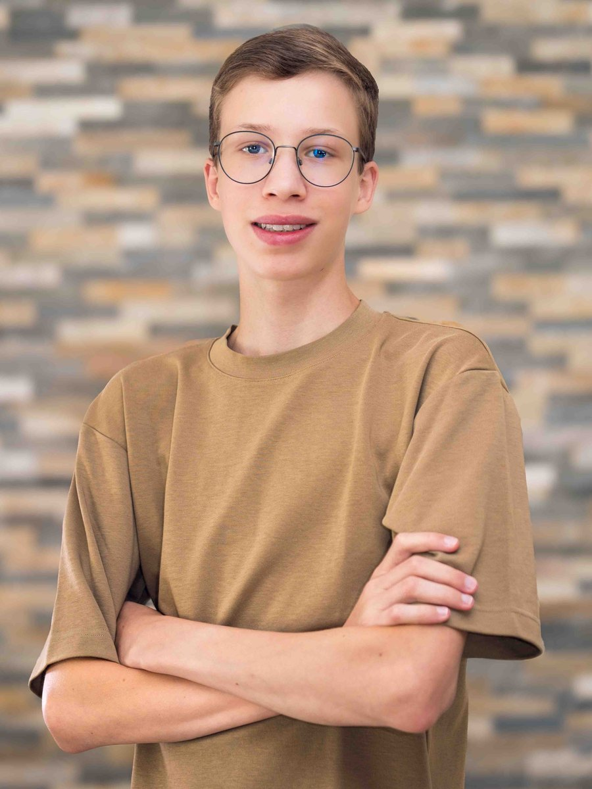

OSKAR KNAPP VIDEOGRAF / LOOSDORF, MOSTVIERTEL
Ich bin Oskar. 16, Videograf aus Loosdorf.
Ich filme und fotografiere im Mostviertel. Echte Projekte statt Theorie.
SCROLLENFOTOS
FOTOGRAF AUS LOOSDORF BEI MELK
Meine liebsten Fotos, entstanden im Mostviertel und unterwegs. Einfach Momente, die mir gefallen.
ALLE FOTOS


DROHNE
Drohnenaufnahmen aus dem Mostviertel und der Wachau, geflogen mit der DJI Mavic 3 Classic.
- FLUGZEIT
- 14h
- STRECKE
- 124km
- FLÜGE
- 107
EU-KOMPETENZNACHWEIS A1/A3
STAND 11/2026
ABOUT

Ich bin 16, wohne in Loosdorf bei Melk und mache Filme. Drehbuch, Regie, Kamera, Schnitt, alles selbst. Jedes Projekt läuft bei mir durch eine Hand, von der ersten Idee bis zum fertigen Film. Daneben fotografiere ich und fliege Drohne.
Mein erster eigener Kurzfilm ALLEIN ist ein Drama über Mobbing. Kurz darauf habe ich gemeinsam mit drei Klassenkollegen den Film "Was kommt danach?" gemacht. Dafür gab es den Sonderpreis der Jury in der Kategorie Clip, Postcard-Challenge 2025/26 der Diözese St. Pölten (Abteilung Schule), verliehen am 20. Mai 2026. Bericht der Schule.
Das technische Fundament kommt aus der IT-HTL Ybbs, Schwerpunkt Medientechnik. Alles Weitere bringe ich mir selbst bei, Projekt für Projekt. Und jedes davon besser als das letzte. Daran halte ich mich fest.
KONTAKT
Projekt, Frage oder einfach Hallo sagen. Schreib mir, ich antworte innerhalb von 24 Stunden